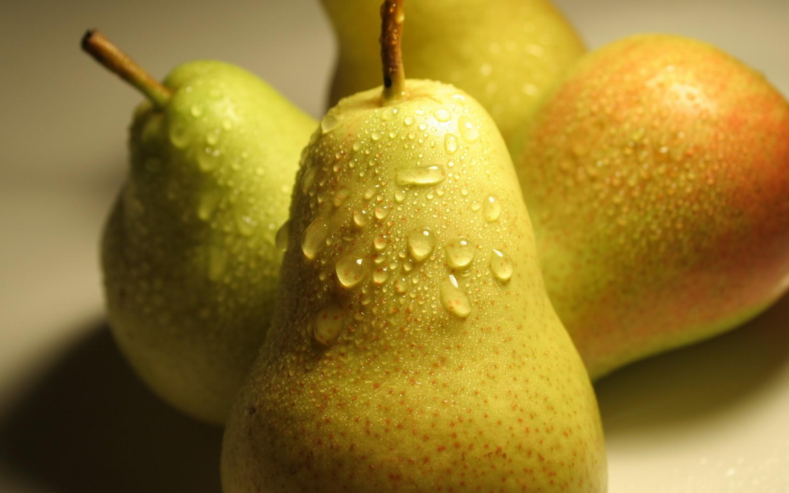

Pere

Para este considerată sora mărului, deoarece fac parte din aceeași familie și ambele sunt numite poame. Au aproximativ aceeași perioadă de dezvoltare și conțin aceleași vitamine și minerale, dar în proporții diferite. Pomul fructifer care ne dăruiește aceste fructe se numește păr.